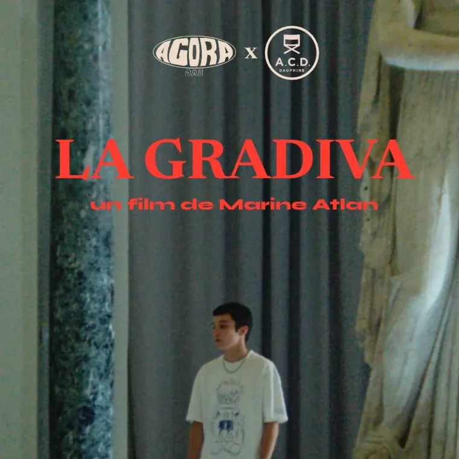

La Gradiva
Longue est la liste des sujets abordés par le film La Gradiva qui met en lumière notre jeunesse actuelle.
≈ 7 min de lectureLes analyses, les collaborations et la vie d’Agora Dau.
Entre ingérence dans le monde entier et volonté de faire taire les contestations, une véritable omniprésence de Trump.
≈ 12 min de lecture
Longue est la liste des sujets abordés par le film La Gradiva qui met en lumière notre jeunesse actuelle.
≈ 7 min de lecture
Des incels à la « Red Pill », comment la crise de la masculinité nourrit le masculinisme.
≈ 14 min de lecture
Quand l'écologie masque la dépossession — des parcs naturels africains aux forêts indiennes, le « vert » sert de prétexte pour expulser des millions d'autochtones.
≈ 12 min de lecture
Du dorveille médiéval aux algorithmes de Netflix — comment le capitalisme a colonisé la nuit.
≈ 13 min de lecture